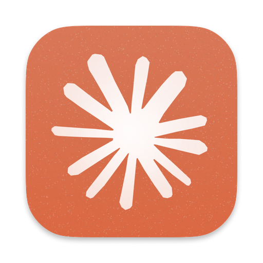
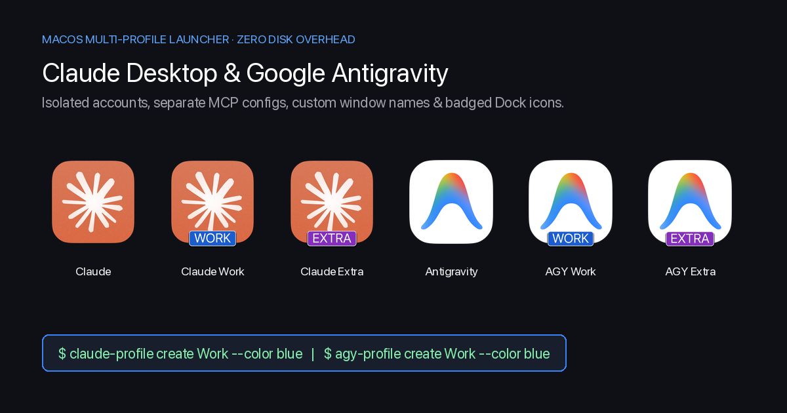
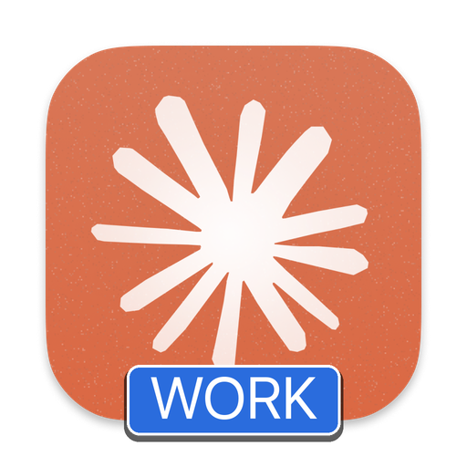
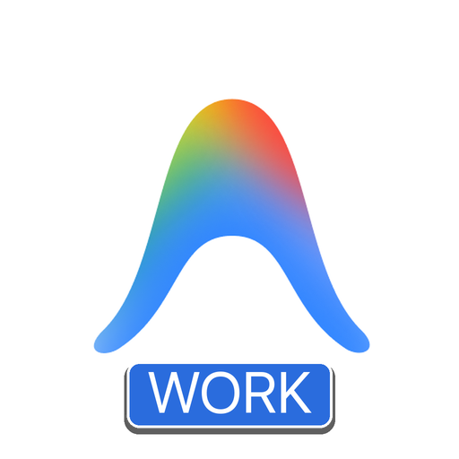
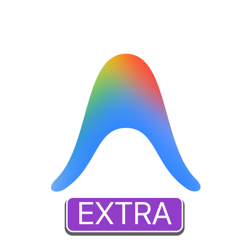
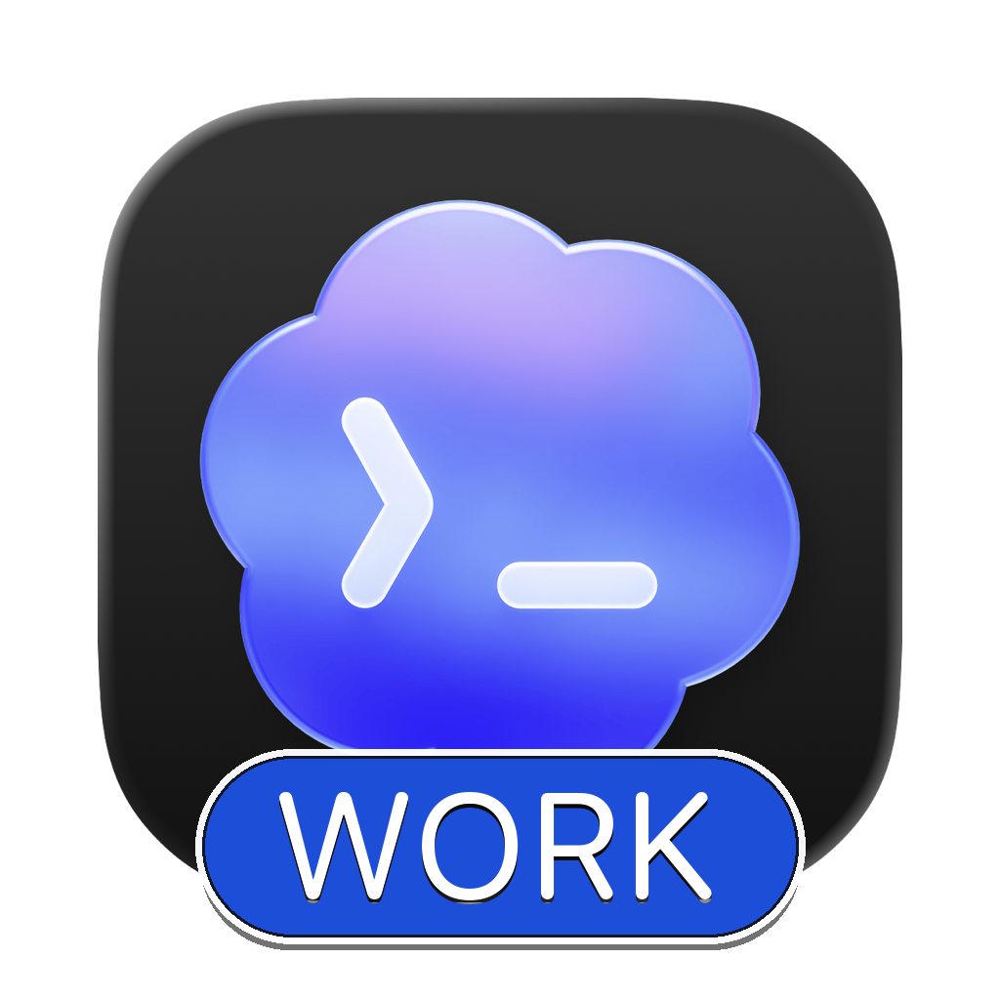
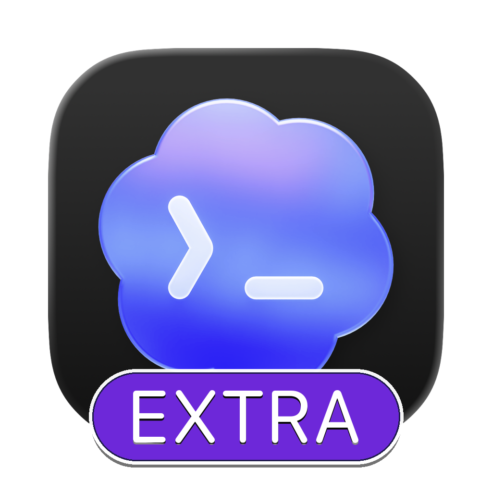

Claude (Default)
Original /Applications/Claude.app bound to ~/Library/Application Support/Claude.
MACOS AI WORKFLOW · CLAUDE · ANTIGRAVITY · CODEX · GROK · ANY APP
Instant APFS copy-on-write macOS bundle cloner and native Mach-O launcher that isolates accounts, background daemons, CLI homes, MCP configs, and AltTab/Mission Control window names.

Twelve distinct macOS application bundles across Claude, Antigravity, Codex, and Grok: isolated accounts, separate MCP/CLI configs, and custom badged icons.
macOS APFS · verifiedai-profile + 4 shortcutsCLI + Agent Skillosacompile fails in AltTab — and how APFS bundle cloning solves itCreating an AppleScript wrapper via osacompile -e 'do shell script "open -n -a Claude --args --user-data-dir=..."' only launches a transient shim that exits immediately while the real window runs inside the original /Applications/ process. macOS WindowServer, AltTab, and Mission Control read window titles and icons from the active process's Info.plist and Assets.car, causing every window to share the exact same name and icon.
Clones any .app bundle into ~/Applications/ in under 1 second via cp -cR (APFS clonefile), sharing physical data blocks with 0 MB disk overhead.
Compiles native universal Mach-O launchers that isolate both Electron UI (--user-data-dir) and platform daemons/CLIs: CLAUDE_CONFIG_DIR for Claude, --gemini_dir for Antigravity's Go language_server, CODEX_HOME for OpenAI Codex, and GROK_HOME + SAND_DATA_ROOT for xAI Grok.
Assets.car StripNormalizes every icon to 1024×1024, composites a high-contrast pill badge (WORK, EXTRA), strips CFBundleIconName and Assets.car so macOS Sequoia never overrides the badged .icns, and activates the hidden official Codex Dark (>_) icon for Codex profiles.
Every profile receives a discrete, multi-resolution macOS .icns icon with a color-coded pill badge so you can distinguish instances immediately in the Dock, Spotlight, AltTab, and Mission Control.

Original /Applications/Claude.app bound to ~/Library/Application Support/Claude.

ai-profile create claude Work --color blue · Isolated MCP & CLAUDE_CONFIG_DIR.
ai-profile create claude Extra --color purple · Side-project Claude account.

Original /Applications/Antigravity.app bound to default ~/.gemini.

ai-profile create antigravity Work --color blue · Dual-layer Go language_server isolation.

ai-profile create antigravity Extra --color purple · Isolated ~/.gemini-profiles/extra.

Official OpenAI Codex Dark icon extracted from /Applications/ChatGPT.app.

ai-profile create codex Work --color blue · Isolated CODEX_HOME (~/.codex-profiles/work).

ai-profile create codex Extra --color purple · Separate config.toml & auth.json.
Original /Applications/Grok Bot.app bound to ~/.grok and ~/.grokbot.
ai-profile create grok Work --color blue · Isolated GROK_HOME & SAND_DATA_ROOT.
ai-profile create grok Extra --color purple · Separate Grok daemon & auth state.
Installs the universal ai-profile CLI, convenience shortcuts (claude-profile, agy-profile, codex-profile, grok-profile), and the multi-ai-profile Agent Skill.
git clone https://github.com/jangtrinh/multi-AI-profile.git
cd multi-AI-profile
./install.sh# Create Work profiles (blue badge) across all 4 AI platforms
ai-profile create claude "Work" --color blue
ai-profile create antigravity "Work" --color blue
ai-profile create codex "Work" --color blue
ai-profile create grok "Work" --color blue
# Create Extra profiles (purple badge)
ai-profile create claude "Extra" --color purple
ai-profile create antigravity "Extra" --color purple
ai-profile create codex "Extra" --color purple
ai-profile create grok "Extra" --color purple
# Or clone Cursor, Windsurf, Cline, or any custom macOS .app
ai-profile create cursor "Work" --color emerald
ai-profile create custom "Work" --app "/Applications/Perplexity.app" --color cyan
# List or remove profiles
ai-profile list
ai-profile remove codex "Extra"AppleScript wrappers exit immediately after spawning the original /Applications/ bundle. Because macOS WindowServer, AltTab, and Mission Control read CFBundleName and icons from the active process's Info.plist, Helper apps, and Assets.car, every window still displays the same name and unbadged icon.
No. ai-profile uses cp -cR (APFS Copy-on-Write clonefile) on macOS, sharing physical storage blocks with the source application. Disk overhead is 0 MB and cloning completes in under 1 second.
ai-profile compiles native Mach-O binary wrappers per platform: Antigravity wraps both the UI (--user-data-dir) and Go language_server (--gemini_dir, --app_data_dir); OpenAI Codex/ChatGPT injects CODEX_HOME and CODEX_ELECTRON_USER_DATA_PATH; xAI Grok injects GROK_HOME, SAND_DATA_ROOT, and SAND_USER_DATA_DIR.